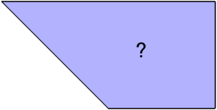
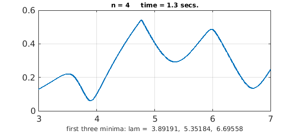
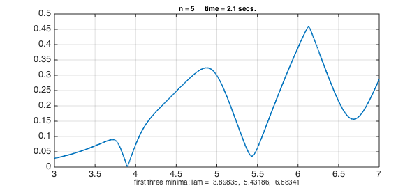
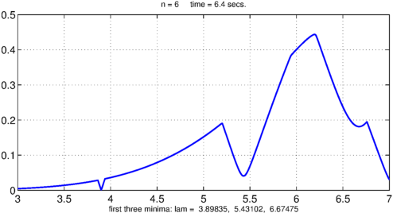

function TrapezoidEigs()
What are the Laplace eigenvalues of this trapezoidal region?
z = [0 1 1+1i -1+1i]; fill(real(z),imag(z),[.7 .7 1]), xlim([-1.5 1.5]), axis equal FS = 'fontsize'; hold on, text(.25,.55,'?',FS,30), hold off, axis off

That is, what numbers $\lambda$ have the property that for some nonzero function $u(x,y)$ with $u=0$ on the boundary of the trapezoid,
$$ - \nabla^2 u = \lambda u ? $$
One way to solve such problems is by the method of particular solutions [2,3]. In this trapezoid, every vertex angle is equal to $\pi$ divided by an integer except the angle $3\pi/4$ at the origin. It follows (this can be proved by the Schwarz reflection principle) that any eigenfunction can be extended smoothly across the boundary except at that singular point. This idea of the method is to take advantage of this structure to expand an eigenfunction in special solutions:
\begin{equation} u(r,\theta) = \sum_{j=1}^\infty c_j \sin(4j\theta/3) J_{4j/3}(\lambda r) . \label{eq1} \end{equation}
Here $r$ and $\theta$ are polar coordinates measured counterclockwise from the origin and $J_{4j/3}$ is a Bessel function. Each term of equation (\ref{eq1}) satisfies the eigenvalue equation and the boundary conditions along the sides from $(0,0)$ to $(1,1)$ and from $(0,0)$ to $(-1,1)$. All that remains is the find coefficients $c_j$, and a value $\lambda$, such that (\ref{eq1}) also takes the value zero on the other two boundaries.
We find these coefficients by truncating the series at term $n$ and sampling the boundary segments in $m\gg n$ points. (In principle each boundary segment could be a continuum and we could do this part of the problem with Chebfun quasimatrices, but experiments suggest this is too slow.) This yields a matrix $A$ depending on $\lambda$,
$$ a_{ij} = \sin(4j\theta_k /3) J_{4j/3}(\lambda r_i), $$
where $(r_i,\theta_i)$ are the polar coordinates of point $i$ along the boundary. If a value of $\lambda$ is found for which the matrix is nearly singular, i.e., its minimal singular value is nearly zero, then $\lambda$ can be expected to be close to an eigenvalue.
Here is a function that evaluates the minimal singular value as a function of $\lambda$.
function sigmin = trapfun(lam,n) % minimal sing val as function of lam
z = [-1+1i+2*(1:2*n)/(2*n+1) 1+1i*(1:n)/(n+1)].';
m = length(z);
sigmin = zeros(size(lam));
A = zeros(m,n);
for k = 1:length(lam)
for j = 1:n
A(:,j) = besselj(4*j/3,lam(k)*abs(z)).*sin(4*j*angle(z)/3);
end
sigmin(k) = min(svd(A));
end
end
Here we scan $\sigma_{\min{}}(\lambda)$ in the interval $\lambda \in [3,7]$ for $n = 4,5,6,7$. In each case we make a chebfun of the resulting function and print its first three interior minima.
dom = [3 7];
for n = 4:7
tic, f = chebfun(@(lam) trapfun(lam,n),dom,'splitting','on'); t = toc;
[a,e] = min(f,'local'); e = e(e>dom(1));
plot(f,'linewidth',1.6), grid on
s = sprintf('n = %d time =%4.1f secs.',n,t); title(s,FS,10)
s = sprintf('first three minima: lam = %8.5f, %8.5f, %8.5f',e(1:3));
xlabel(s,FS,10), snapnow
end




Looking at the results, it seems likely that the first three eigenvalues of the trapezoidal drum are approximately $3.8984$, $5.433$, and $6.70$.
The method of particular solutions became well known through the work of Fox, Henrici and Moler [3] and led to the MATLAB logo, adapted from an eigenvalue of the L-shaped region. (Moler was the inventor of MATLAB.) There is a MATLAB command logo to display this image, but it does not appear to work within one of these published Example files.
The implementation of the method of particular solutions of this Example, which is close to what might have been done in [3], is not robust enough to treat more general problems or higher eigenmodes. In general a robust implementation requires sampling in the interior of the region as well as on the boundary to avoid degeneracies; see [2]. For much more advanced related methods used to solve much more difficult eigenvalue problems, see [1].
end
References
-
A. Barnett and A. Hassell, Fast computation of high frequency Dirichlet eigenmodes via the spectral flow of the interior Neumann-to-Dirichlet map, Communications of Pure and Applied Mathematics 67 (2014), 351--407.
-
T. Betcke and L. N. Trefethen, Reviving the method of particular solutions, SIAM Review 47 (2005), 469--491.
-
L. Fox, P. Henrici, and C. B. Moler, Approximations and bounds for eigenvalues of elliptic operators, SIAM Journal on Numerical Analysis 4 (1967), 89--102.